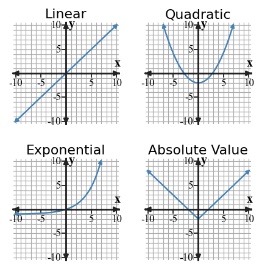

Function Families
Core idea: Classify a family by combining graph shape with table patterns, equation structure, and context.
You will compare linear, quadratic, exponential, and absolute value relationships using evidence from several representations.
Learning Target
Students will recognize common function families from graphs, tables, equations, and contexts.
I can statements
- I can design examples of linear, quadratic, exponential, and absolute value relationships using more than one representation.
- I can extend patterns in tables, graphs, equations, and contexts to work with common function families.
- I can critique a proposed function family choice using evidence from rate of change, shape, or equation structure.
Vocabulary / Key Terms
- linear
- quadratic
- exponential
- absolute value
- function family
Preview the terms. Build their meanings from the reading, representations, and examples.
What's To Come
This is a long-range preview for this section. Do not solve it yet. Circle anything familiar, underline symbols, labels, conditions, data, or features that seem important, and write short notes about what you think may matter later.

Four unlabeled graphs are shown. Match each graph to one family name—linear, quadratic, exponential, or absolute value—and write one visual or numerical clue you used for each match.
Teaching note: Facilitate noticing only. Ask what looks familiar, what labels or structure students notice, and what they are unsure about. Do not solve the preview.
Content: Read, Represent, Annotate, Apply
Directions
Read in short chunks. Annotate the prose and representations together. Mark evidence, conditions, important quantities, labels, patterns, and questions.
Reading: Use structure to recognize a family
A function family is a group of relationships that share important structure. In this section, the four families are linear, quadratic, exponential, and absolute value. Each family can appear as an equation, table, graph, or context.
Equation structure gives fast clues. A linear rule has a constant-rate form such as $y=mx+b$. A quadratic rule includes a squared variable such as $y=x^2+1$. An exponential rule places the variable in an exponent, such as $y=2^x$, while an absolute value rule uses bars such as $y=|x|-4$.
Graph shape is useful evidence, but it should not be the only evidence. A line suggests linear behavior, a U-shaped parabola suggests quadratic behavior, a J-shaped growth curve can suggest exponential behavior, and a V-shape suggests absolute value. Scale and a limited viewing window can make shapes misleading.
Stop and Discuss
- What equation feature distinguishes $y=2^x$ from $y=x^2$?
- Why should graph shape be treated as evidence rather than proof by itself?
Teacher answer: Expected reasoning: exponential has the variable in the exponent, while quadratic has a squared variable. Graph windows/scales can hide or distort features, so use table or equation evidence too.

| Family | Equation clue |
|---|---|
| Linear | $y=mx+b$ |
| Quadratic | variable squared |
| Exponential | variable in an exponent |
| Absolute value | absolute-value bars |
Example 1: Classify Equations by Family
Classify each equation by family: $y=3x-2$, $y=x^2+1$, $y=2^x$, $y=|x|-4$.
Teacher answer: Answer: Linear; quadratic; exponential; absolute value.
You Try It 1: Read Family Structure in Equations
Classify: $y=-4x+5$, $y=(x-2)^2$, $y=3(1.5)^x$, $y=2|x+1|$.
Teacher answer: Answer: Linear; quadratic; exponential; absolute value.
Reading: Let tables and graphs provide numerical evidence
Tables reveal how outputs change as inputs increase evenly. A linear table has constant first differences: the same amount is added each step. An exponential table has a constant multiplicative ratio when the inputs advance by equal steps.
Quadratic tables do not have constant first differences, but their first differences change in a regular way; for equally spaced inputs, the second differences are constant. This separates quadratic growth from exponential growth, which is multiplicative rather than additive.
Graphs add geometric evidence. A quadratic graph has a vertex and symmetry about a vertical line. A typical exponential graph is not symmetric; its growth or decay follows repeated multiplication and often approaches a horizontal level on one side.
Stop and Discuss
- For equally spaced inputs, what table evidence supports a linear classification?
- How can a table help distinguish quadratic growth from exponential growth?
Teacher answer: Expected reasoning: linear has constant first differences. Quadratic has constant second differences, while exponential has a constant ratio for equal input steps.
Example 2: Use Table Differences
For $x=0,1,2,3$, a table has $y=2,5,8,11$. Identify the likely family and state the evidence.
Teacher answer: Answer: Linear; the first differences are constant at 3.
You Try It 2: Use a Constant Ratio
For $x=0,1,2,3$, a table has $y=3,6,12,24$. Identify the likely family and state the evidence.
Teacher answer: Answer: Exponential; each output is multiplied by 2.
Example 3: Distinguish Quadratic and Exponential Graphs

Compare the two graphs shown. Which graph is quadratic and which is exponential? Give one feature beyond “it curves.”
Teacher answer: Answer: The left graph is quadratic and the right graph is exponential. The quadratic is symmetric with a vertex; the exponential has multiplicative growth and a horizontal approach on one side.
You Try It 3: Compare Table Patterns
A table has outputs $1,4,9,16$ for inputs $1,2,3,4$. Another has outputs $2,6,18,54$. Classify both and justify.
Teacher answer: Answer: The first is quadratic ($y=x^2$); the second is exponential (ratio 3).
Reading: Match the family to the way a situation changes
Contexts describe change in words. A quantity that increases by the same amount per unit is naturally linear. A quantity multiplied by the same factor over equal intervals is naturally exponential. The words “adds” and “multiplies” point to different structures.
Quadratic behavior often appears when a squared quantity is built into the model, such as the area of a square or a parabolic height model. Absolute value appears naturally with distance from a central value because distance is nonnegative and produces a V-shaped relationship in a simple one-dimensional model.
A family claim should connect to evidence, not a memorized picture. A strong explanation names the family and cites a feature such as constant difference, constant ratio, vertex/symmetry, equation structure, or the kind of change described by the situation.
Stop and Discuss
- Which phrase suggests exponential change more strongly: “adds 5 each hour” or “multiplies by 1.5 each hour”? Why?
- Name one piece of evidence stronger than “the graph curves.”
Teacher answer: Expected reasoning: multiplying by a common factor indicates exponential behavior. Stronger evidence includes constant ratio, constant second differences, a vertex/symmetry, or equation structure.
Example 4: Choose Families from Context
A taxi cost increases by the same amount per mile. A bacteria culture multiplies by the same factor each hour. Choose a likely family for each and explain.
Teacher answer: Answer: Taxi: linear because additive change is constant. Bacteria: exponential because multiplicative change is constant.
You Try It 4: Connect Graph Shape to Family
A ball’s height is modeled by a parabola, while a distance-from-center rule has a V-shaped graph. Name the likely families.
Teacher answer: Answer: Ball height: quadratic. V-shaped distance rule: absolute value.
Vocabulary / Key Terms — Definitions
| Term | Meaning |
|---|---|
| linear | a family with constant additive rate of change |
| quadratic | a family associated with squared-variable structure and constant second differences for equal input steps |
| exponential | a family with multiplicative change over equal input steps |
| absolute value | a family built around distance-like absolute-value structure, often producing a V-shaped graph |
| function family | a group of functions sharing characteristic structure and behavior |
Summary
- Function families can be recognized from equations, tables, graphs, and contexts.
- Linear patterns use constant additive change; exponential patterns use constant multiplicative change.
- Quadratic patterns show squared-variable structure and constant second differences for equal input steps.
- Graph shape is useful, but a family claim is stronger when another representation supports it.
Synthesis: ask students to contrast additive, second-difference, and multiplicative evidence without treating DOK or family names as difficulty labels.
Common Mistakes
| Mistake | Why it is tempting | Check instead |
|---|---|---|
| Calling every curved graph exponential | Several families can curve. | Check equation structure, differences, ratios, and symmetry. |
| Confusing quadratic and exponential tables | Both may increase faster over time. | Check second differences versus ratios. |
| Classifying from one visual clue | A graph window can hide important structure. | Use at least one additional representation or numerical feature. |